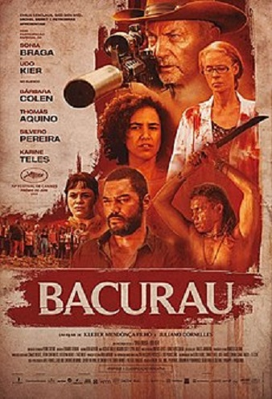
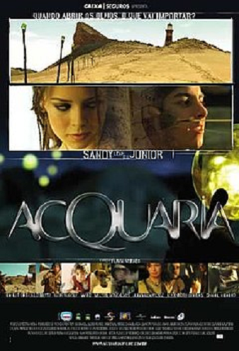

Filmes de FIcção Científica Nacionais
BacurauOs moradores de Bacurau, um pequeno povoado do sertão brasileiro, descobrem que a comunidade não consta mais em qualquer mapa. Aos poucos, eles percebem algo estranho na região: enquanto drones passeiam pelos céus, estrangeiros chegam à cidade. Quando carros são baleados e cadáveres começam a aparecer, Teresa, Domingas, Acácio, Plínio, Lunga e outros habitantes chegam à conclusão de que estão sendo atacados. Agora, o grupo precisa identificar o inimigo e criar coletivamente um meio de defesa. | O Homem do Futuro
Zero é um cientista ridicularizado cuja última invenção o levou ao passado, lhe dando a chance de refazer sua vida. De volta à época de faculdade, ele reencontra Helena, sua paixão, mas acaba interferindo em acontecimentos do futuro. Agora, Zero precisa consertar o futuro sem perder Helena de novo. |
Branco Sai, Preto Fica
Tiros em um baile de black music em Brasília ferem dois homens, que ficam marcados para sempre. Um terceiro vem do futuro para investigar o acontecido e provar que a culpa é da sociedade repressiva. |
Um Lobisomem na AmazôniaA jovem Natasha parte com seus amigos para a Floresta Amazônica, entusiasmada em experimentar o líquido alucinógeno conhecido como Chá do Santo Daime. Tudo corre bem até que eles encontram uma estranha criatura. |
Abrigo Nuclear
Os habitantes de um abrigo subterrâneo, construído para preservar a raça humana da poluição radioativa, vivem sob um regime controlado pela comandante Avo. Apesar de protegidos, eles nutrem a esperança de saírem um dia. |
AcquáriaApós constantes agressões à natureza, a água do planeta está praticamente esgotada e os jovens Sarah e Kim, ao lado de seus amigos, tentam encontrar uma forma de obter este bem tão precioso e indispensável para a sobrevivência da humanidade. |